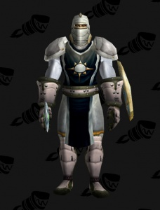

Made by Axel
Tabard of the Argent Dawn is a tabard given to those who aid the Argent Dawn in the fight against the Scourge Invasion.  *Added in patch 1.13.0 "Classic"
Tabard of the Argent Dawn is a tabard given to those who aid the Argent Dawn in the fight against the Scourge Invasion.
*Added in patch 1.13.0 "Classic"